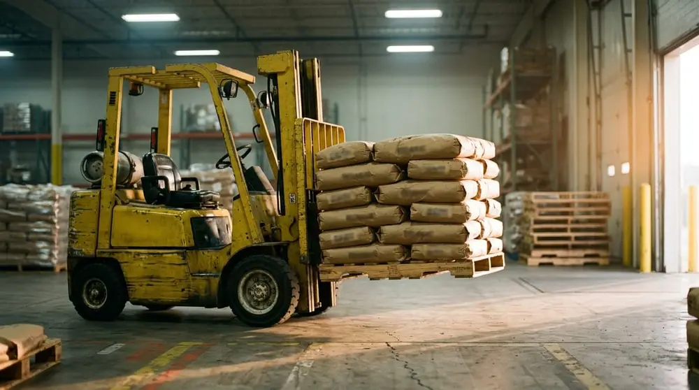
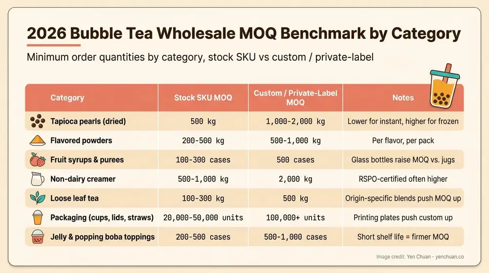
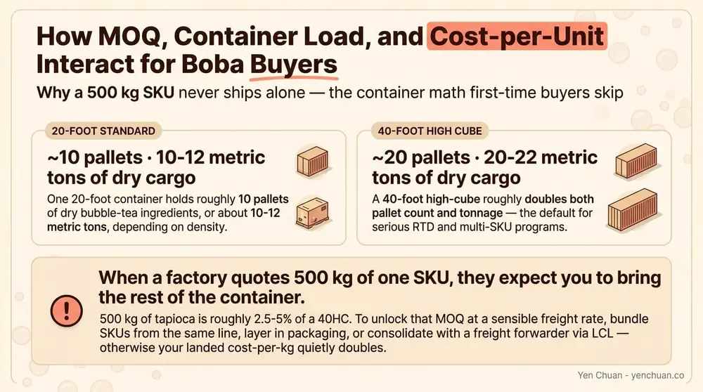

Articles / Business & sourcing
Bubble Tea Wholesale MOQ Explained 2026
2026-04-03 · Sourcing, Business

MOQ is usually the first number a new buyer hears back from a Taiwanese bubble tea supplier, and it is almost always the number that decides whether the conversation continues. A quoted MOQ of 500 kg of tapioca pearls or 100 cases of non-dairy creamer sounds straightforward until you translate it into cash, warehouse space, and 40-foot container math. In 2026, after three years of freight normalization and tighter factory margins, MOQs across the boba supply chain are moving in quiet but meaningful ways. This guide walks B2B buyers through what a realistic MOQ looks like by product category, why factories set the numbers they do, and the levers you can actually pull at the negotiating table.
What MOQ really means in the Taiwan boba supply chain
Minimum order quantity is the smallest amount a manufacturer will produce or ship in a single purchase order. For a vertically integrated Taiwanese ingredient maker, the number is almost never arbitrary. It is engineered from three hard constraints: the batch size of the production line, the pallet or carton configuration that loads a container efficiently, and the gross margin required to justify a changeover between SKUs. If a tapioca pearl line runs a 1,000 kg batch and a single changeover costs roughly four hours of downtime, splitting that batch into a 200 kg order forces the factory to absorb the changeover on a much smaller revenue base.
That is the baseline logic, but MOQ is also a risk-management tool. Factories use it to screen serious buyers from tire-kickers, to cap credit exposure on first orders, and to protect shelf-life inventory from sitting too long. Understanding this means your negotiation is not "please lower the MOQ" but rather "here is how I absorb the cost you are trying to avoid." Yen Chuan covered the upstream picture in the Milk Tea Supplier Guide, which pairs well with this piece for buyers new to Taiwan sourcing.
2026 MOQ benchmarks by product category
The numbers below reflect typical Taiwan factory direct MOQs for export orders in Q1 and Q2 2026. They are ranges, not quotes — actual MOQs vary by SKU, packaging format, and whether you are ordering stock or custom.
| Category | Typical MOQ (stock SKU) | Typical MOQ (custom / private label) | Notes |
|---|---|---|---|
| Tapioca pearls (dried) | 500 kg | 1,000-2,000 kg | Lower for instant-style, higher for frozen |
| Flavored powders | 200-500 kg | 500-1,000 kg | Per flavor, per pack format |
| Fruit syrups & purees | 100-300 cases | 500 cases | Glass bottles raise MOQ vs. jugs |
| Non-dairy creamer | 500-1,000 kg | 2,000 kg | RSPO-certified often higher |
| Loose leaf tea | 100-300 kg | 500 kg | Origin-specific blends MOQ higher |
| Packaging (cups, lids, straws) | 20,000-50,000 units | 100,000+ units | Printing plates push custom up |
| Jelly & popping boba toppings | 200-500 cases | 500-1,000 cases | Short shelf life = firmer MOQ |
The custom column is where first-time buyers usually get surprised. A private label run with your own logo, nutrition panel, and regional flavor profile triggers artwork approval, a dedicated production slot, and often a separate QC sample batch. That overhead rarely justifies anything under a full container or the equivalent in domestic shipping weight. For the difference between sourcing dried boba and the cooked or frozen variants, our Black vs White Tapioca Pearls breakdown explains how format choice directly shapes your MOQ ceiling.

Why MOQ numbers shifted in 2026
Three forces pushed MOQs into their current range. First, ocean freight normalized after the 2022-2024 spikes, but trans-Pacific LCL (less-than-container-load) rates stayed roughly 20 percent above pre-pandemic norms. That makes partial-container orders uneconomic for both sides, so factories began bundling MOQs closer to the 20-foot container threshold — roughly 10-12 tons of dry goods or 18-20 pallets.
Second, Taiwan's food-grade raw material costs rose on the back of a weaker New Taiwan dollar and tighter cassava starch imports from Thailand and Vietnam. Factories absorbed some of that in 2024 but began resetting MOQs upward in late 2025 to protect margins on small runs. Buyers sourcing cross-border can compare the regional picture in our Taiwan vs China vs Southeast Asia sourcing analysis.
Third, shelf-life and QC protocols tightened. FSMA-driven importer demands and the EU's updated food contact material rules mean factories do more documentation per batch. That paperwork cost is a fixed overhead, which raises the effective break-even batch size by roughly 8 to 12 percent for export-grade SKUs.
How buyers actually negotiate MOQ down
The myth is that MOQ is negotiated by asking nicely. In practice, the lever that works is risk transfer. If you can reduce the factory's exposure on changeover, inventory, or credit, you earn room on the minimum.
Start with bundled orders across SKUs from the same line. A factory running powdered creamer can often combine three flavors into one 2,000 kg production slot, giving you effective MOQs of 500-700 kg per flavor while they still hit their batch target. Next comes deposit-heavy terms — 50 percent at PO, 50 percent at bill of lading. Strong deposits offset the credit risk the MOQ was partly built to cover.
Annual volume commitments are the cleanest route. A signed letter of intent for 12 tons over 12 months, split into quarterly shipments, lets the factory plan its line and warrants smaller individual release MOQs. Yen Chuan regularly structures contracts this way for café chains and regional distributors. Taking stock SKUs instead of custom is the simplest win: a ready-to-ship flavor with existing artwork avoids the custom setup overhead entirely, and MOQs drop by 40-60 percent in most categories.
Finally, consolidated shipping with other buyers matters for smaller operators. A full container split across three non-competing regional buyers gets each of them factory-direct pricing on sub-MOQ line items, because the container economics clear.
MOQ and container math — the calculation buyers skip
Most MOQ surprises trace back to a simple miscalculation. A 20-foot container holds roughly 10 pallets of dry bubble tea ingredients, or about 10-12 metric tons depending on density. A 40-foot high cube doubles that to 20-22 tons. When a factory quotes you 500 kg of one SKU, they are expecting you to bring the rest of the container along, either from their catalog or via a freight forwarder consolidating with other shippers.

Run the numbers this way. Take your total annual demand by SKU. Divide by four for quarterly shipment planning. If any single SKU lands under the factory MOQ, either increase the order frequency to annual, bundle with adjacent SKUs, or shift to a stock item. The bubble tea startup costs guide includes a worked example of how first-year inventory planning interacts with supplier MOQs for a new shop. For multi-shop buyers pulling from tapioca pearls wholesale and several non-dairy creamer SKUs at once, consolidation usually unlocks the cleanest pricing.
Red flags when an MOQ looks too low
A supplier offering 50 kg of custom-formulated creamer or 100 cases of private-label syrup at factory-direct prices deserves scrutiny. Real Taiwan factories with their own production lines rarely go that low on custom work, because the changeover math does not clear. Low MOQs usually signal one of three situations: the "factory" is a trading company repackaging from larger runs, the product is leftover stock from a cancelled order, or the quoted price has a hidden setup fee that surfaces after the PO is signed.
Vet this by requesting the factory's business registration number, a recent batch certificate of analysis, and photos of the production line with date markers. A genuine Taiwanese manufacturer will produce all three within a business day. Trading companies and brokers usually cannot.
Authority citations
- Statista — Bubble Tea Market Outlook 2026
- Mordor Intelligence — Taiwan F&B Ingredient Export Report 2025
- FDA — FSMA Foreign Supplier Verification Program
- World Bank — Container Freight Rate Index, Asia-Pacific 2026 Q1
- Food & Beverage Magazine — Bubble Tea Wholesale Procurement Trends, 2026
About Yen Chuan
Yen Chuan has been at the heart of Taiwan's bubble tea industry for over 20 years, supplying premium powders, syrups, tapioca pearls, and tea leaves to thousands of boba shops worldwide. With an in-house R&D lab and a commitment to quality ingredients, Yen Chuan is more than a supplier — we're your partner in the boba business.
Our export team has structured thousands of MOQ-sensitive orders for café chains, regional distributors, and first-time importers. We know where the math actually bends and where it doesn't, and we build order structures that work for both sides of the container.
Ready to talk volumes?
Mapping out your first wholesale order or trying to rebuild a supply plan around tighter 2026 MOQs? Contact our export team to review your SKU list and find the cleanest path to factory-direct pricing. You can also browse our full catalog to see stock MOQs before you reach out.
Frequently Asked Questions
Q: What is a typical MOQ for wholesale bubble tea ingredients? A: For Taiwan factory-direct orders in 2026, typical MOQs run 500 kg for stock tapioca pearls, 200-500 kg per flavor for powders, and 100-300 cases for syrups. Custom or private label orders usually require 1,000 kg or more per SKU to justify the production changeover.
Q: Can I negotiate a lower MOQ with a Taiwan supplier? A: Yes, but only by offsetting the cost the MOQ was designed to absorb. Bundling multiple SKUs from the same production line, signing annual volume commitments, or accepting deposit-heavy payment terms all open room. Simply asking for a lower number rarely works.
Q: Why are bubble tea MOQs higher in 2026 than before? A: Three factors drove the shift: ocean freight LCL rates staying 20 percent above pre-pandemic levels, Taiwan raw material costs rising with a weaker NTD, and tighter FSMA and EU documentation overhead raising the effective break-even batch size by 8-12 percent.
Q: Is a very low MOQ from a Taiwan "factory" a red flag? A: Often yes. Real Taiwanese manufacturers with their own production lines rarely offer 50 kg custom runs at factory-direct pricing. A too-low MOQ usually means a trading company, cancelled-order stock, or a hidden setup fee. Verify with a business registration number, recent COA, and dated production line photos.
Q: How does container size affect my MOQ planning? A: A 20-foot container fits roughly 10-12 metric tons of dry bubble tea ingredients, and a 40-foot high cube fits 20-22 tons. Factory MOQs are calibrated to fill these containers efficiently, so planning your SKU mix against container capacity is the fastest way to hit minimums without carrying dead inventory.